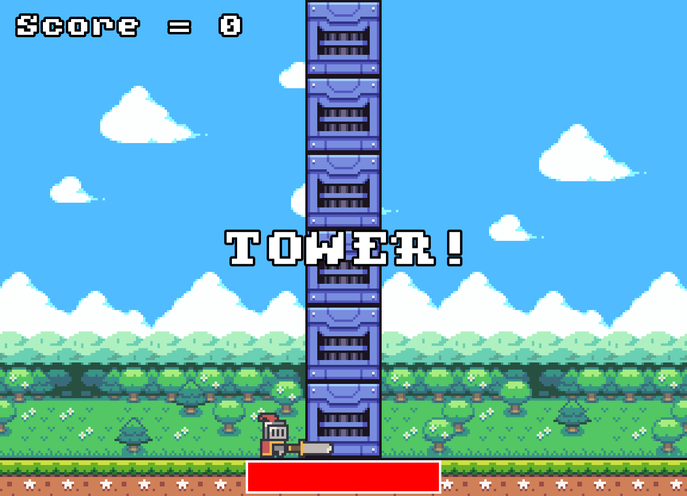

TOWER! Game
Play as a brave knight tearing down an impossibly tall tower of technology.
Programming Features
A small 2D game developed using C++ and SFML to demonstrate knowledge and understanding of C++ fundamentals.
TOWER! is a clone of the popular game Timberman, available on Steam, but with a more fantasy RPG-esque aesthetic.
Key features include:
- Player movement left and right
- Simple background animation
- Random number generation
- Collision detection
- Time management
- Audio handling